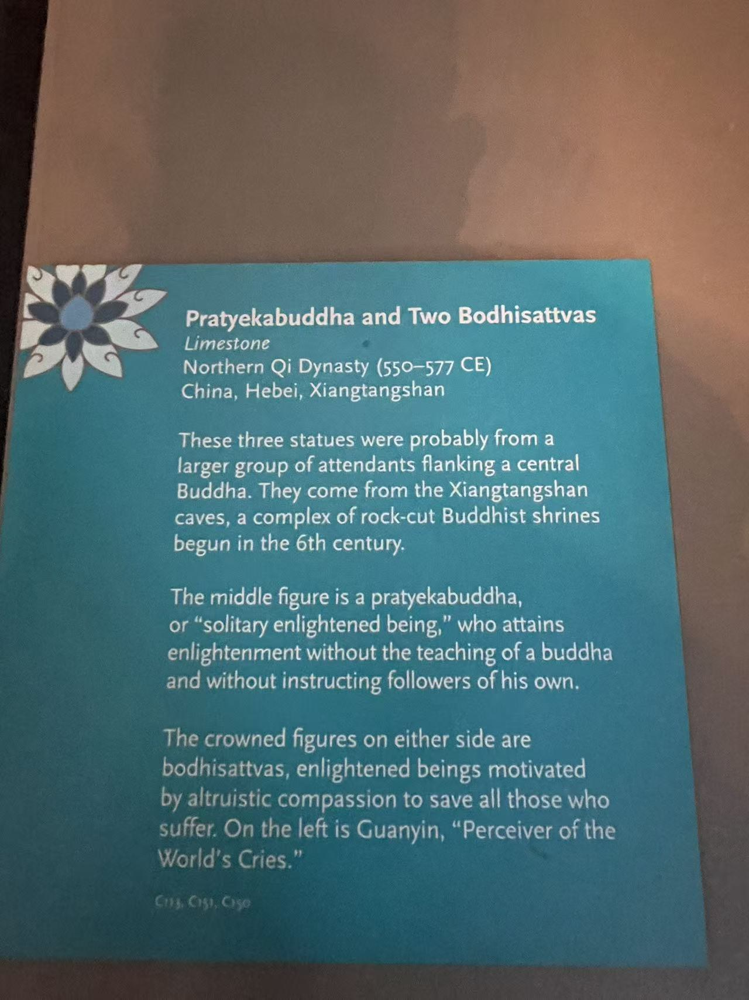

XIANGTANGSHAN / 南响堂第二窟
观音菩萨立像
Standing Bodhisattva Avalokitesvara (Guanyin)

- 收藏
- 宾夕法尼亚大学博物馆
- 编号
- C113
- 年代
- 北齐（550—577）
- 材料
- 石灰岩，残留彩绘
- 原属洞窟
- 南响堂第二窟
- 照片位置
- 合照左侧
作品札记
三尊合照最左侧的立像，冠、胸前装饰与垂挂衣带保存了菩萨的形制。冠中的小阿弥陀佛是辨认观音的重要标识。沿着颈部到胸前，再看衣带如何向下垂落，装饰的层次比远看更清楚。
宾大博物馆记录其来自南响堂第二窟，1916年购自卢芹斋。它与同馆C151、C150同属一窟，但馆方指出C113与C151雕刻处理不同，可能并非原来同一组造像。
尺寸资料：馆藏网页与响堂山项目所列高度、宽度和深度不一致，尺寸暂缺。
现场展签

